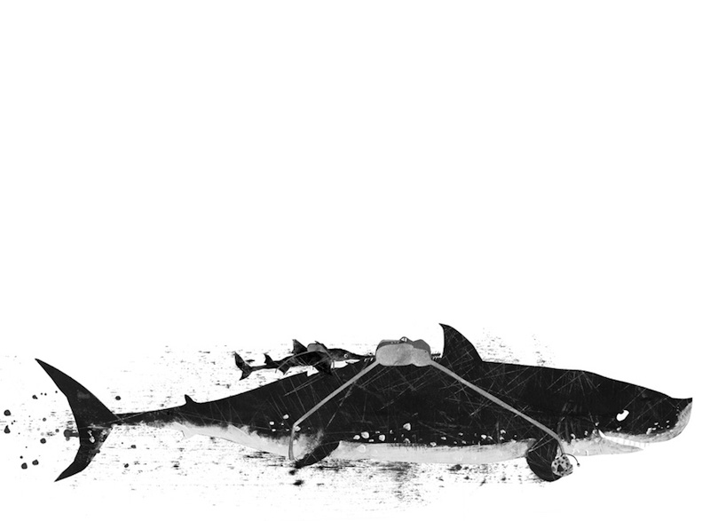
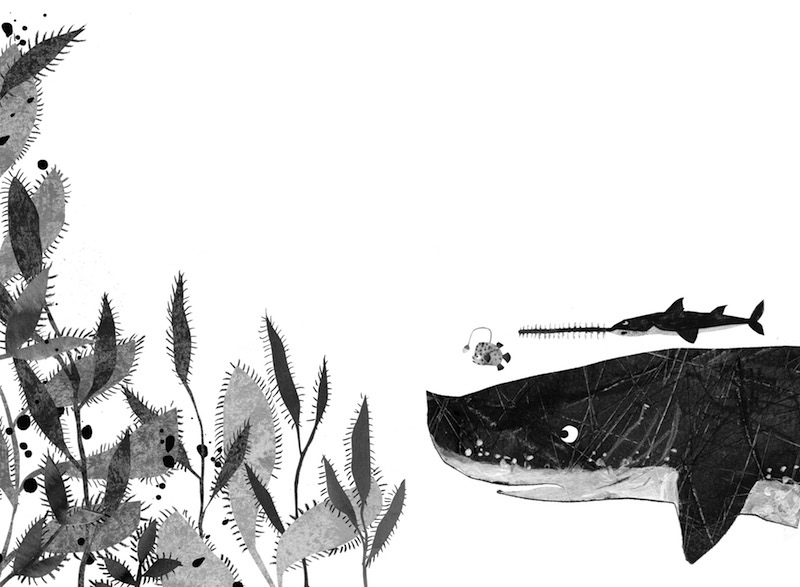
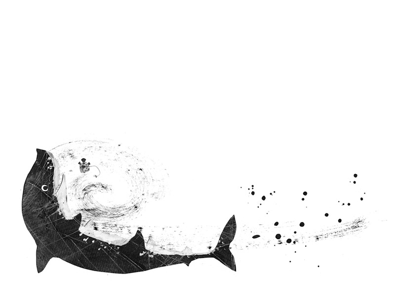
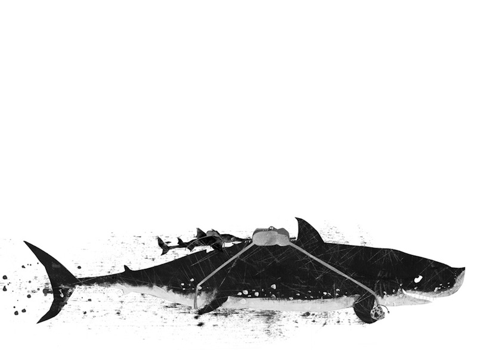
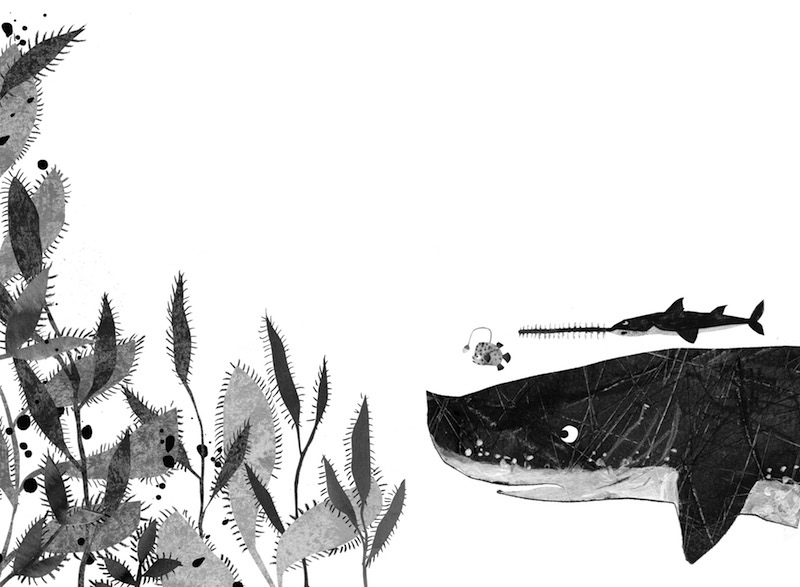
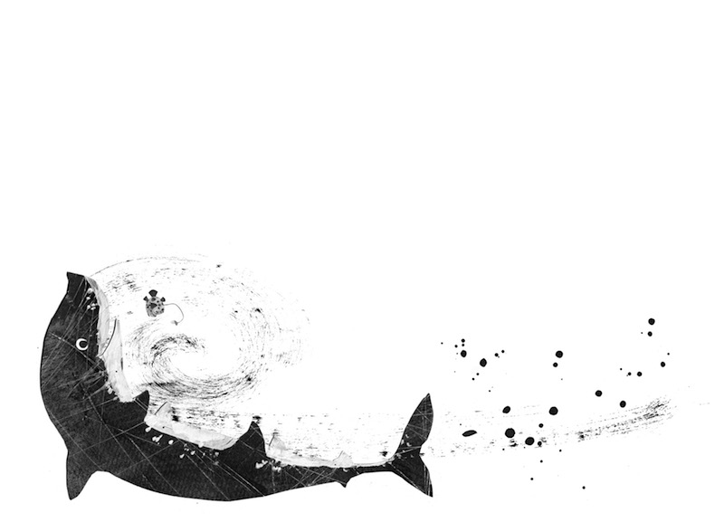

Ein Unterwasserabenteuer für Kinder von 5 bis 7 Jahren: Die Geschichte
dreier Fische, die unterschiedlicher nicht sein könnten – und trotzdem
die allerbesten Freunde sind. Ein Buch über Freundschaft, Mut,
Hilfsbereitschaft und Algeneiscreme.
Die Geschichte der drei Fischkinder «Funzel, Reisszahn und Säge» ist
als frei erzählte Fortsetzungsgeschichte entstanden. Auf Wanderungen
und bei anderen Gelegenheiten habe ich meinem ältesten Sohn (7) und
seinen beiden besten Freunden (5 und 8) jeweils von den drei
Fisch-Freunden erzählt. Irgendwann habe ich begonnen, die Geschichte
aufzuschreiben. «Die Reise zum Leuchtblumenfeld» ist das erste von
vielen Abenteuern, welches die drei Freund gemeinsam erleben. Es sind
noch weitere Episoden erzählt worden, die jederzeit auch auf Papier
gebracht werden können.
...
«Funzel, Reisszahn und Säge» ist als Vor – und Selbstlesebuch mit
grosszügigem Layout und grosser Schrift gedacht. Es soll Kinder im
ersten Lesealter fürs Bücherlesen begeistern. Ein Abenteuer zum
Eintauchen im doppelten Sinn also; einmal in die wunderbare Welt des
Lesens, einmal in die wundersame Welt unter der
Meeresoberfläche.
Warum?
Kinder wollen Abenteuer erleben und sind jederzeit dazu bereit, die
Welt zu verändern. Und genau das tun die drei Fischfreunde: Ohne zu
zögern brechen sie zu einer spannenden Reise auf, bestehen unterwegs
manches Abenteuer und sorgen mit ihrem unerschrockenen Einsatz dafür,
dass das beliebte Leuchtblumenfest auch in diesem Jahr wieder
stattfinden kann. Eine gehörige Portion Mut, Hilfsbereitschaft, Humor
und Algeneiscreme ist dazu allerdings notwendig.
...
Die Eltern der drei Fischkinder oder andere «Aufsichtspersonen»
kommen in der Geschichte nicht vor: Die drei Fische haben keine
Autoritäten über sich. Sie sind ganz auf sich alleine gestellt bzw.
stehen einander gegenseitig bei. Obwohl sie sehr unterschiedlich
sind – alleine die Grössenunterschiede sind enorm! – haben alle ihre
Stärken und tragen einen wichtigen Teil zum Gelingen ihrer Mission
bei.
Natürlich kommt zum Schluss alles so, wie es kommen soll: Funzel,
Reisszahn und Säge finden die Leuchtblumen, kommen heil zu Hause an
– und das Fest kann stattfinden.
Inhalt
Das Buch hat ca. 80 Seiten und 15 Illustrationen, die jeweils die
Schlüsselszenen des Kapitels aufgreifen. Die rund 60 000 Zeichen inkl.
Leerzeichen sind auf 15 Kapitel verteilt. Jedes Kapitel ist ausserdem
mit einer Illu-Vignette zu Kapitelbeginn oder -ende versehen.
...
Die Doppelseiten U2/3 und 80/U3 sind mit kleinen schwarzweissen
Porträts der Charaktere aus der Geschichte versehen (Laternenfisch,
Sägefisch, Urzeithai, Tintenfisch, Seepferdchen etc.). Das Buch soll
im Herbst 2019 im Neptun-Verlag erscheinen.
Geschichte
An einem trüben Herbstmorgen finden die drei Freunde Funzel, Reisszahn
und Säge heraus, dass es in der Gegend zwischen Korallenfelsen und
Schiffswrack keine einzige Leuchtblume mehr gibt. Und das wenige Tage
vor dem beliebten Leuchtblumenfest! Die drei Freunde tun, was sie
immer tun, wenn es ein Problem zu lösen gibt: sie legen sich im Kreis
auf den sandigen Meeresgrund – und besprechen. Rasch sind sie sich
einig: Es führt kein Weg daran vorbei, sie müssen versuchen, neue
Leuchtblumen zu beschaffen.
...
Der Blumenhändler, ein altes Seepferdchen, weiss als einziger, wo
noch Leuchtblumen wachsen und zeigt ihnen auf einer Meeresgrundkarte
den weiten und gefährlichen Weg zum Leuchtblumenfeld. Am nächsten
Morgen brechen unsere drei Freunde auf und erreichen gegen Abend die
Schwarzschwarzen Berge. Im stockdunklen Innern des Gebirges wartet
bereits die Wächterin der Berge auf sie, ein alte Muräne. Nach einer
denkwürdigen Begegnung und einer langen Nacht führt die alte Muräne
unsere drei Freunde auf die andere Seite der Berge. Funzel,
Reisszahn und Säge sind so froh darüber, die Dunkelheit hinter sich
zu haben, dass sie beinahe vergessen, was als nächstes auf sie
wartet: ein Hohlstrudel. Als es ihnen wieder einfällt, ist die
Stimmung im Eimer. Zumindest die von Reisszahn und Säge; ihnen
graust vor dem Hohlstrudel. Als es Funzel schliesslich gelingt, ihre
beiden Freunde wieder aufzumuntern, zieht und zerrt auch schon das
Wasser an ihnen. Aber auch dieses Abenteuer werden die drei
Fisch-Freunde gut überstehen. Als sie schliesslich dort ankommen, wo
laut Meeresgrundkarte die Leuchtblumen wachsen sollten, stellt sich
unseren drei Freunden eine letzte Schwierigkeit in den Weg:
Brennalgen haben das Leuchtblumenfeld zugewuchert. Jede Berührung
mit den Algen schmerzt. Als Funzel sich in einer Brennalge verfängt,
schneidet Säge sie frei – und findet dabei heraus, dass die Algen
seiner Säge nichts anhaben können. Also schneidet er einen Weg durch
die Brennalgen und so kommen unsere Freunde schliesslich beim
wunderschönen Blumenfeld und seinen selbstvergessenen Bewohnern an.
Sie ernten so viele Leuchtblumen, wie in ihre Rucksäcke passen und
machen sich schnellstmöglich wieder auf den Heimweg. Gerade
rechtzeitig kommen Funzel, Reisszahn und Säge wieder zu Hause an.
Die Festbänke sind bereits aufgestellt, die Muschelgirlanden hängen
– das Leuchtblumenfest kann stattfinden.
Autorin
Mena Kost, *1980 in Basel, ist Journalistin und diplomierte
Organisationskommunikatorin. Nach einem zweijährigen Volontariat im
Basler Pressebüro Kohlenberg arbeitete Mena Kost als freie
Journalistin in Basel. Sie spezialisierte sich auf Porträts,
Interviews und sozialpolitische Themen und arbeitete für diverse
Medien (u.a. Basler Zeitung, Handelszeitung, K-Tipp, St. Galler
Tagblatt, Der Bund, 50Plus, Das Magazin etc).
...
2004 bis 2007 studierte
sie an der in Winterthur Journalismus und Organisationskommunikation,
war Medienverantwortliche bei der NGO «Exchange for Peace» und tätigte
die Recherche-Arbeiten im Vorfeld der Public Eye Awards in Davos. Von
2008 bis 2015 war Mena Kost Co-Leiterin der Redaktion des
Strassenmagazins Surprise, wo sie im Vierer-Team mit viel Engagement
und wenig Budget zweiwöchentlich ein Magazin herausbrachte; sie
plante, konzipierte, recherchierte, schrieb, redigierte, korrigierte,
produzierte und führte freie Mitarbeiterinnen und Mitarbeiter. Heute
arbeitet Mena Kost als freie Journalistin und Lektorin, schreibt
Kinderbücher und ist Mutter von zwei kleinen Buben.
Illustratorin
Priska Wenger, * 1978, studierte an der Hochschule für Gestaltung in
Luzern Visuelle Kommunikation und Illustration. Seit 2006 arbeitet sie
als freischaffende Illustratorin.
...
Von 2007 bis 2015 lebte und
arbeitete sie in New York, wo sie 2009 den Master in Fine Arts
ablegte. Heute lebt Priska Wenger mit ihrer Familie in Biel.
www.priskawenger.com
 




